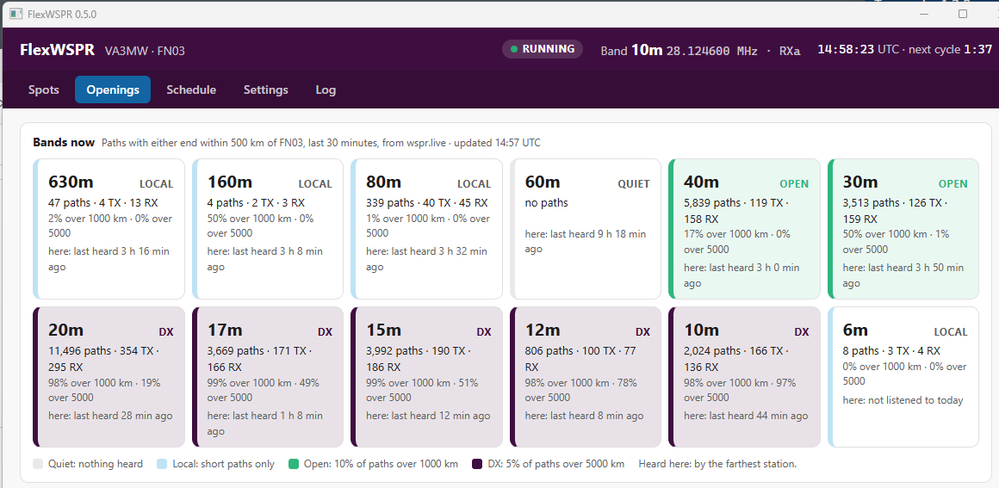
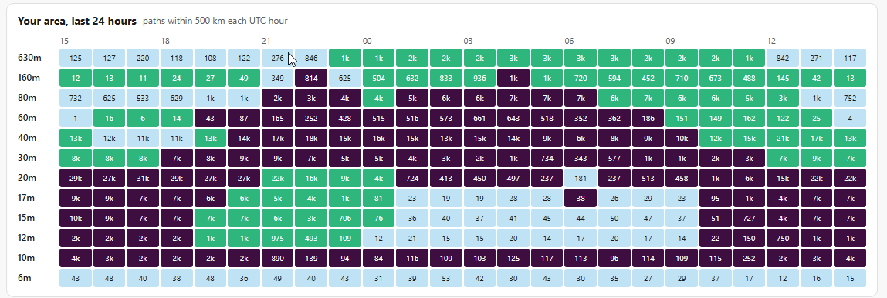
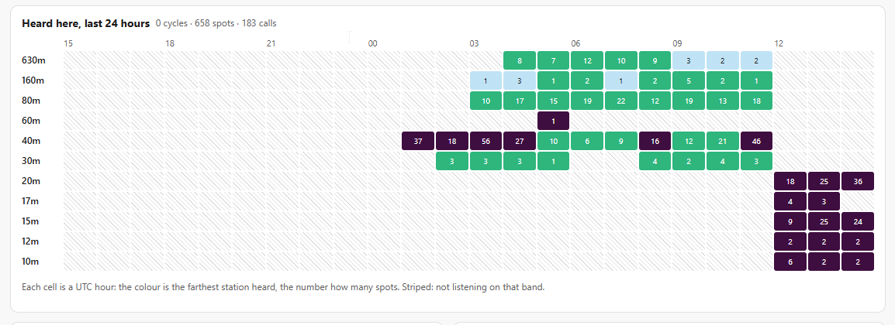

What it does
No audio cables
Opens its own panadapter and DAX IQ stream on the radio, so SmartSDR, DAX audio and your slices stay free.
Band rotation
Step through 80 m to 6 m (or any bands) all day, or set different bands by time of day.
Antenna per band
Pick ANT1, ANT2, RXa, RXb or a transverter port for each band; it switches with the band.
Band openings
Shows which bands are open from your area right now, and over the last 24 hours.
Best signal
Ranks every spot by SNR, distance and transmit power, so a weak signal from far away can win.
wsprnet.org upload
Sends your spots the way WSJT-X does, and keeps them queued while the internet is down.
Desktop or headless
A Windows desktop app, or a headless program for a Raspberry Pi that you set up from any web browser.
Watch from anywhere
The same screens are served as a web page, so you can check the station from a phone or another PC.
Openings: a screen to leave up
The Openings tab refreshes every minute. It combines what your own receiver hears with what other stations near you are hearing, taken from the public WSPR database at wspr.live. So it covers bands FlexWSPR is not listening to at that moment.

| Rating | Means |
|---|---|
| Quiet | No paths near you on that band |
| Local | Paths, but few over 1000 km |
| Open | At least 3 paths over 1000 km, and 10% or more of all paths |
| DX | At least 3 paths over 5000 km, and 5% or more of all paths |


Download
From the latest release:
| File | For |
|---|---|
| flexwspr-gui-windows-amd64.exe | Windows desktop app (most people want this one) |
| flexwspr-linux-arm64 | Raspberry Pi OS 64-bit (Pi 3, 4, 5), headless |
| flexwspr-linux-arm | Raspberry Pi OS 32-bit, headless |
| flexwspr-linux-amd64 | Debian or Ubuntu on a PC, headless |
| flexwspr-windows-amd64.exe | Windows, headless (web page only) |
| flexwspr.service, flexwspr.example.yaml | systemd unit and a sample settings file, for Linux |
Windows may warn that the program is from an unknown publisher, because it is not code-signed. Choose More info → Run anyway.
Getting started on Windows
- Install WSJT-X. FlexWSPR uses its
wsprd.exedecoder and finds it inC:\WSJT\wsjtx\bin,Program Files\wsjtx\binor on the PATH. - Run
flexwspr-gui-windows-amd64.exe. On first start it opens on Settings. - Enter your callsign and grid. Click Find radios and pick yours, or type its IP address.
- Pick a receive antenna, by default or per band. The menus list what your radio has once it connects.
- Tick Upload spots to wsprnet.org if you want to report, then Save and restart.
- Choose a band or a rotation on the Schedule tab. The first spots appear about two minutes after it connects.
Settings are saved in C:\ProgramData\FlexWSPR\flexwspr.yaml. Spots and the log go to C:\ProgramData\FlexWSPR\data. While the app runs, it also serves its screens at http://localhost:8080. To watch from a phone, open Settings → Decoder and files and tick Reachable from other computers.
Running headless on a Raspberry Pi
Install the decoder and a good clock, then the program and its service:
sudo apt install wsjtx chrony
wget https://github.com/va3mw/FlexWSPR/releases/latest/download/flexwspr-linux-arm64
wget https://github.com/va3mw/FlexWSPR/releases/latest/download/flexwspr.service
sudo install flexwspr-linux-arm64 /usr/local/bin/flexwspr
sudo cp flexwspr.service /etc/systemd/system/
sudo systemctl enable --now flexwsprThen browse to http://<pi-name>:8080 from any computer and set it up there, just as on Windows. journalctl -u flexwspr -f shows the log. On 32-bit Raspberry Pi OS, use flexwspr-linux-arm instead.
The web page has no password. Keep port 8080 on your own network. Over the network, the page can change station, radio, antenna, schedule and upload settings, but not program paths.
Choosing a schedule
One band
Stays on one band. Good for watching a single band closely.
Band rotation
Pick a range, such as 80 m to 6 m, and how many two-minute cycles to stay on each band. With 10 bands at 3 cycles each, every band gets 6 minutes once an hour, around the clock. This is a good default for catching openings you didn't expect.
Time slots
Give each UTC time range its own band list: for example, low bands at night and high bands by day. Outside every slot, it stays on the default band.
The Schedule tab previews the next hour before you save. Band changes happen in the gap between cycles, so no capture is cut short.
Best signal
Each spot gets a score: the SNR it would have had from a 1 W transmitter 1000 km away.
score = SNR − (power dBm − 30) + 20·log10(km ÷ 1000)Higher transmit power counts against a station, and each doubling of distance adds 6 dB. So −24 dB from 200 mW at 7000 km (score −0.1) beats −10 dB from 5 W at 800 km (score −18.9). The Spots tab shows the best signal overall and per band. The Openings tab lists every station heard, best first.
Questions
Which radios does it work with?
FLEX-6000 series radios running SmartSDR. It has been run on a FLEX-6600 with firmware v4.3.16. FlexWSPR connects as a GUI client, so on radios with few client connections, such as the FLEX-6300, SmartSDR may not be able to connect at the same time.
Does it need SmartSDR or DAX running?
No. FlexWSPR talks to the radio directly over the network. Don't run another DAX IQ program on the same IQ channel (channel 1 by default; you can change it in Settings).
Nothing decodes. What should I check?
First, the clock: WSPR needs your PC clock within about one second. Install chrony on Linux; on Windows, check with w32tm /query /status. Then check that the antenna is right for the band. If you still never get a decode, try Flip Q in .c2 files, then Swap I and Q, in Settings.
What is sent over the internet?
Only what you turn on. With upload on, your spots go to wsprnet.org. With Openings on, FlexWSPR asks wspr.live about stations near your grid, at most every five minutes. Both can be turned off in Settings.